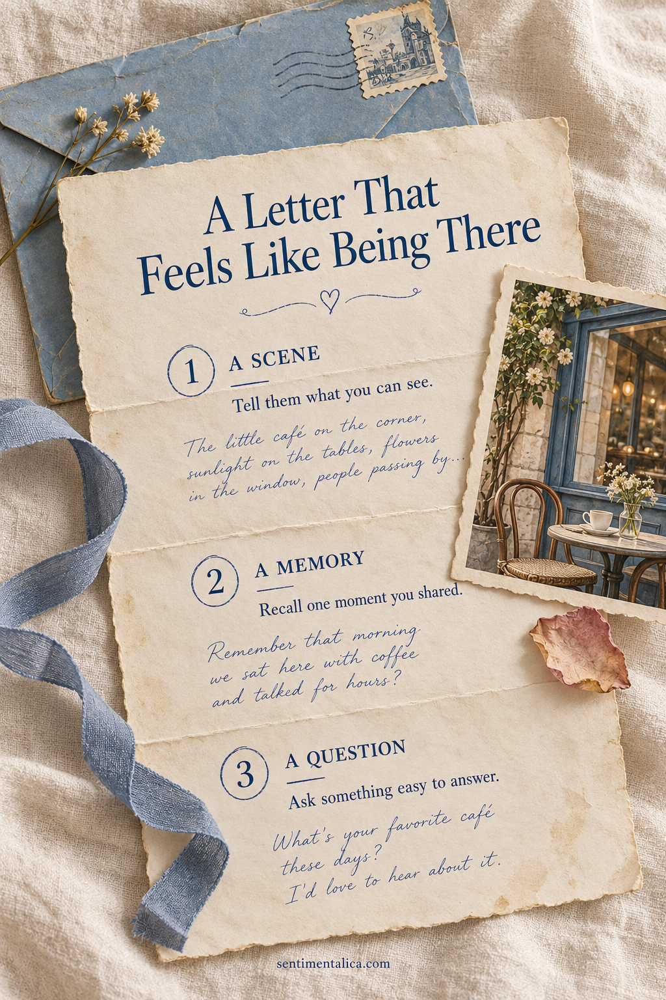
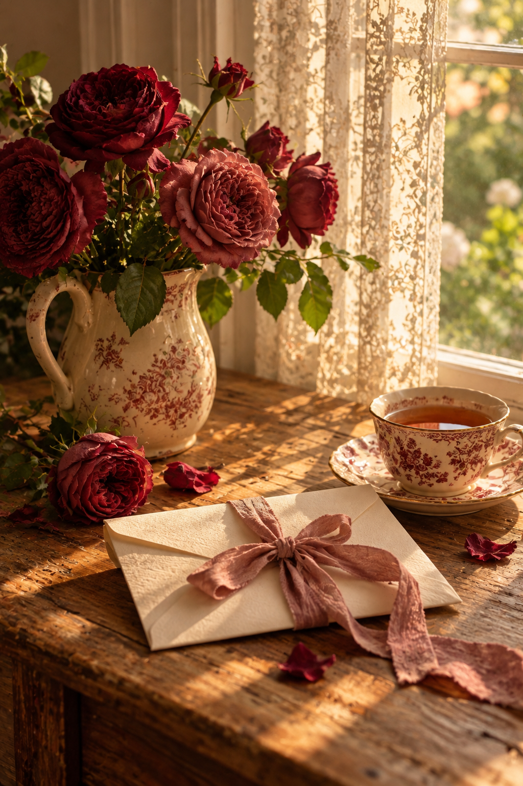

A meaningful letter to a friend does not need a dramatic update. It needs enough detail that the person can feel close to your ordinary day. Begin with one specific scene, move into a shared memory, and finish with a question that is easy to answer. This simple shape gives a handwritten letter direction while leaving room for your own voice, pauses, and small discoveries.

Start Where You Actually Are
Before reaching for a greeting, look around and choose a scene. Describe the cup near your elbow, the sound from the street, or the paper you are writing on. Add one action: you have just come home, you are waiting for bread to cool, or you finally found a quiet corner.
Keep the scene to a few sentences. ‘I am writing at the kitchen table while the rain taps the window’ gives the reader a place to arrive. You do not need to explain the entire week before saying hello. Write as though your friend has joined you for a little while.
Write the scene your friend would have noticed if they were sitting beside you.
Let One Detail Open a Shared Memory
Find something in the scene that reminds you of your friend. Perhaps the cup recalls a café you visited, or a song brings back a journey. Describe the connection without forcing it. If no detail makes a natural bridge, simply write, ‘I remembered our afternoon in…’ and continue from there.
Choose one moment inside the memory: the table you chose, the unexpected detour, or what made you both laugh. A short scene is easier to enter than a general statement about wonderful times. If you remember events differently, leave room for that: ‘I think you were the one who noticed the sign.’

Ask a Question with a Small Doorway
Finish the main letter with one answerable question. ‘What have you been making lately?’ gives the reader somewhere to begin. So does ‘Is there a corner of your new home you especially like?’ Choose a question connected to what you know about their life, rather than asking for a complete account of everything.
Avoid turning the last paragraph into a questionnaire. One thoughtful invitation is plenty, and a reply can arrive in whatever form suits your friendship. You can write ‘I would love to hear when you have a moment’ without making the letter feel like another task that needs completing.
Add an Enclosure That Belongs to the Letter
If you want to include a small paper extra, make it serve the scene or memory. A hand-drawn corner of your kitchen, a copied recipe heading, or a decorative card carrying a sentence from the letter can feel personal. Keep it flat enough to sit comfortably inside the folded pages.
A decorative enclosure does not have to become an elaborate gift. Give it one job: hold a little image, mark a page, or repeat a phrase you hope your friend will keep. If the letter already feels complete, leave it as it is. The words are the part only you can send.
Read It Once in Your Speaking Voice
Read the letter quietly before folding it. Change any phrase you would never say to this person. If a paragraph sounds formal, replace it with the simple version: ‘I miss our walks’ can carry more feeling than a carefully polished statement about friendship. Keep the particular details that make the letter yours.
Add the date so the page can become a keepsake, even if you write only a few paragraphs. A crossed-out word or an uneven line is part of a handwritten letter's texture. Once the scene, memory, and question are there, you have made a small piece of your world available to someone who is far away.
Find more gentle paper projects in the Sentimentalica journal.